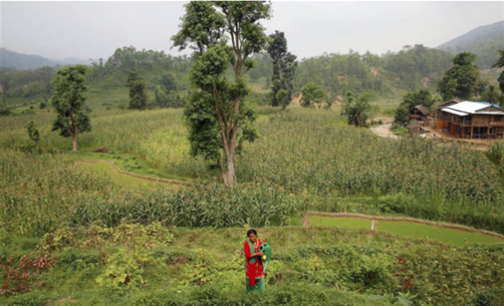
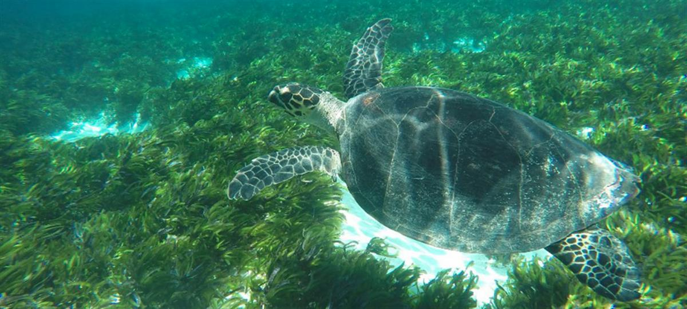

© UNESCO A horse rider heads towards mountains in Kyrgyzstan .
UN offers science-based blueprint to tackle climate crisis, biodiversity loss and pollution
18 February 2021
Without nature’s help, “we will not thrive or even survive”, the UN chief said on Thursday, launching a major report on the environment.
“For too long, we have been waging a senseless and suicidal war on nature. The result is three interlinked environmental crises”, Secretary-General António Guterres told a virtual press briefing on the UN Environment Programme (UNEP) report, Making Peace with Nature.
Pointing to climate disruption, biodiversity loss and pollution, which “threaten our viability as a species”, he detailed their cause as “unsustainable production and consumption”.
“Human well-being lies in protecting the health of the planet”, said Mr. Guterres.
Linking challenges
According to the UNEP report, the world can tackle the climate, biodiversity and pollution crises together, but the UN chief said that these interlinked crises require “urgent action from the whole of society”.
Noting that some two-thirds of global CO2 emissions are linked to households, he underscored that “people’s choices matter”.
He explained that “we are overexploiting and degrading the environment on land and sea. The atmosphere and the oceans have become dumping grounds for our waste. And governments are still paying more to exploit nature than to protect it”.
Trio of emergencies
The report shows that the global economy has grown nearly fivefold in the past five decades, but at massive cost to the environment.
Despite a pandemic-induced decline in emissions, global warming is on track to increase by 3°C this century and while pollution-related diseases are prematurely killing some nine million people annually, over a million plant and animal species risk extinction.
Mr. Guterres made several points, including that women represent 80 per cent of those displaced by climate disruption; polluted water kills a further 1.8 million, predominantly children; and 1.3 billion people remain poor and some 700 million hungry.
“The only answer is sustainable development that elevates the well-being of people and the planet”, he said, drawing attention to possible actions for governments, including putting a price on carbon, shifting subsidies from fossil fuels to nature-friendly solutions and agreeing to “not support the kind of agriculture that destroys or pollutes nature”.
‘The bottom line’
While noting that far-reaching change involves recasting how we invest in nature, the report presents a strong case to integrate nature’s value into policies, decisions and economic systems that, among other things, foster innovative sustainable technologies.
“The bottom line is that we need to transform how we view and value nature”, said the Secretary-General. “The rewards will be immense. With a new consciousness, we can direct investment into policies and activities that protect and restore nature”.

SDGs and the environment
The report examines linkages and explains how science and policymaking can advance the Sustainable Development Goals (SDGs) by 2030 and a carbon neutral world by 2050, all while bending the curve on biodiversity loss and curbing pollution.
While the authors stress that ending environmental decline is essential to advancing the SDGs on poverty alleviation, food and water security, and good health for all, Mr. Guterres flagged the need for “urgency and ambition” to address how we produce our food and manage our water, land and oceans.
“Developing countries need more assistance. Only then can we protect and restore nature and get back on track to achieve the Sustainable Development Goals by 2030”, he said, adding that the report shows that “we have the knowledge and ability to meet these challenges”.
As an example, Making Peace with Nature outlined that sustainable agriculture and fishing, allied with diet changes and less food waste, can help end global hunger and poverty, improve nutrition and health, and spare more land and ocean for nature.
“It’s time we learned to see nature as an ally that will help us achieve the Sustainable Development Goals”, upheld the Secretary-General.
An auspicious year
This year, beginning with next week’s UN Environment Assembly, a number of key international environmental conferences – including on climate change, chemicals, biodiversity, desertification and oceans – can help to propel us on the path to sustainability, the UN chief said.
“One key moment occurs tomorrow, when we welcome the United States of America back into the Paris Agreement on climate change”, he highlighted, noting that the move “strengthens global action”.
“President Biden’s commitment to net zero emissions means that countries producing two-thirds of global carbon pollution are pursuing the goal of carbon neutrality by 2050. But we need to make this coalition truly global and transformative”, he added.
If adopted by every country around the world, a global coalition for carbon neutrality by 2050 can still prevent the worst impacts of climate change.
“But there can be no delay. We are running out of time to limit temperature rise to 1.5°C and build resilience to the impacts to come”, he asserted.
Adopting a vision
The report spotlighted the importance of changing mindsets to find political and technical solutions that equal the environmental crises.
“The path to a sustainable economy exists – driven by renewable energy, sustainable food systems and nature-based solutions. It leads to an inclusive world at peace with nature”, said Mr. Guterres, emphasizing that “this is the vision we must all adopt”.
The UN chief encouraged everyone to use the report to “re-evaluate and reset our relationship with nature”.
Making Peace with Nature draws on global assessments, including those from the Intergovernmental Panel on Climate Change (IPCC), Intergovernmental Science-Policy Platform for Biodiversity and Ecosystem Services (IPBES), UNEP reports and new findings on the emergence of zoonotic diseases, such as COVID-19.

ICS/Craig Nisbet - The Seychelles moved in March 2020 to protect 30 per cent of its marine environment.
SOURCE: UN NEWS